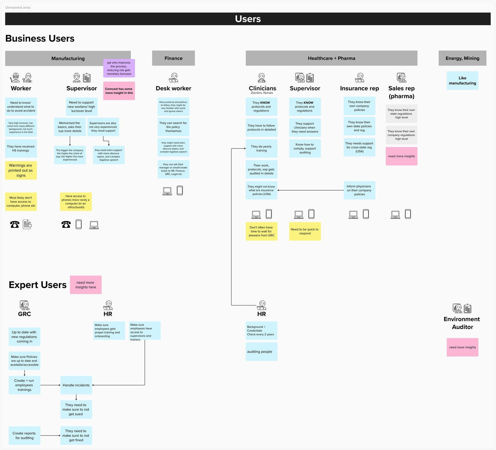
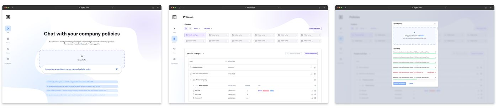
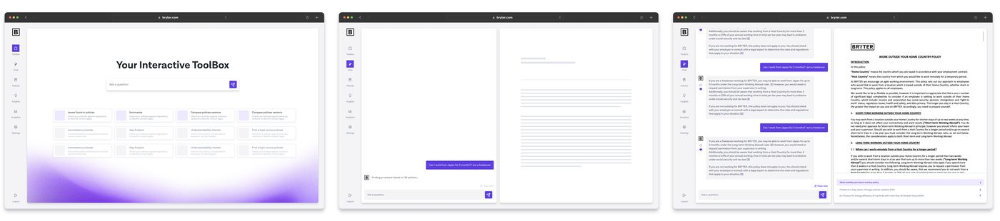
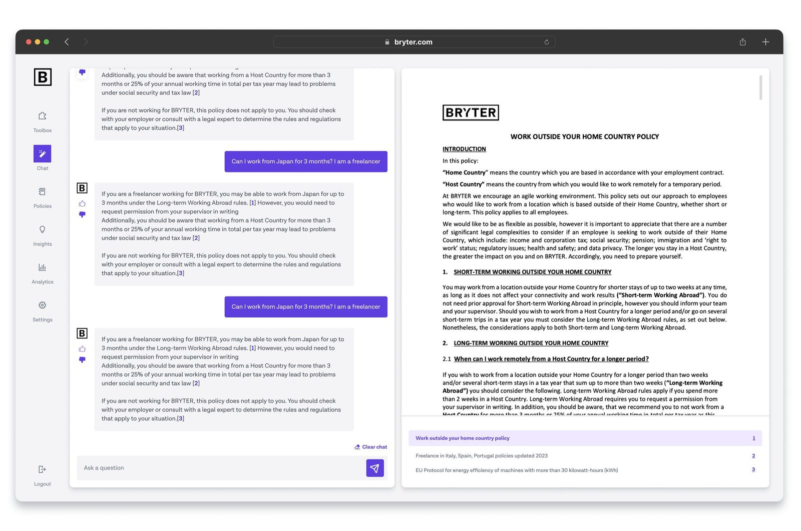
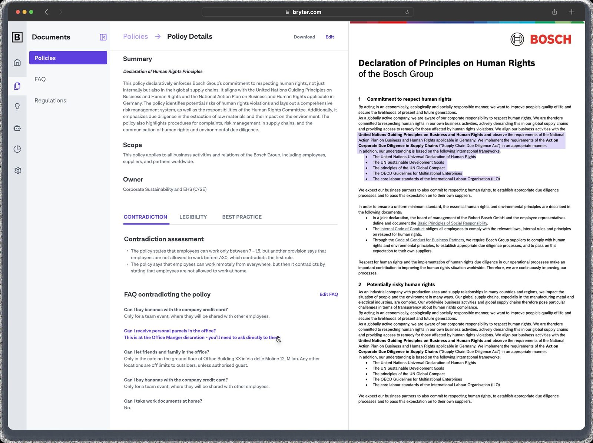
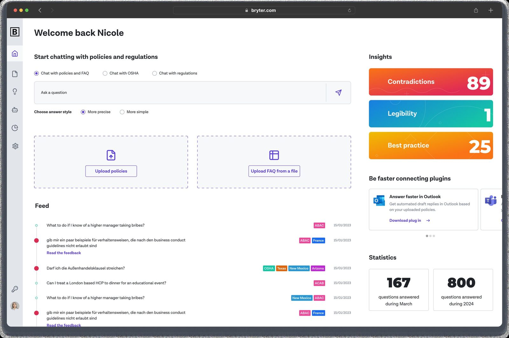
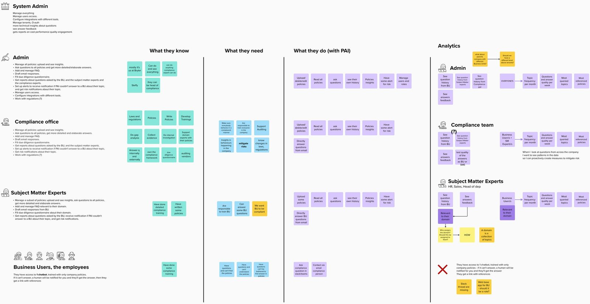
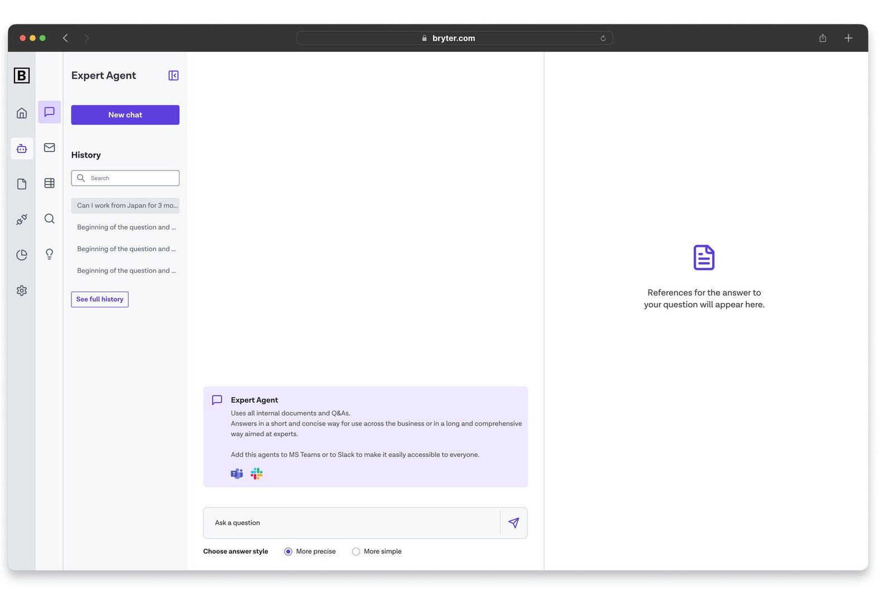
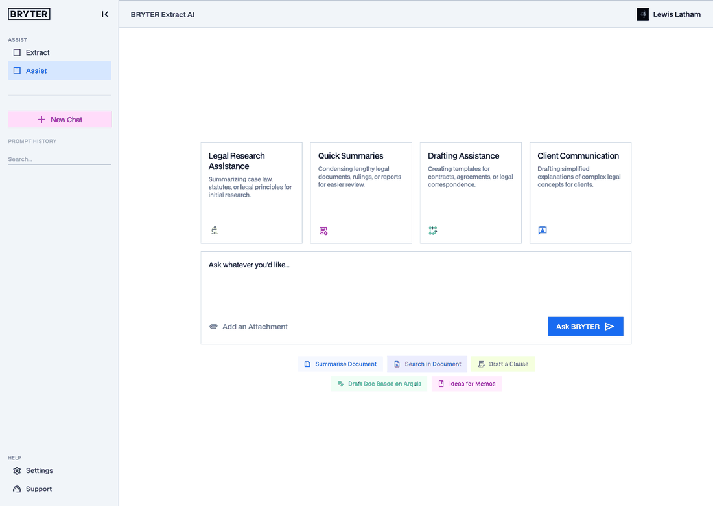
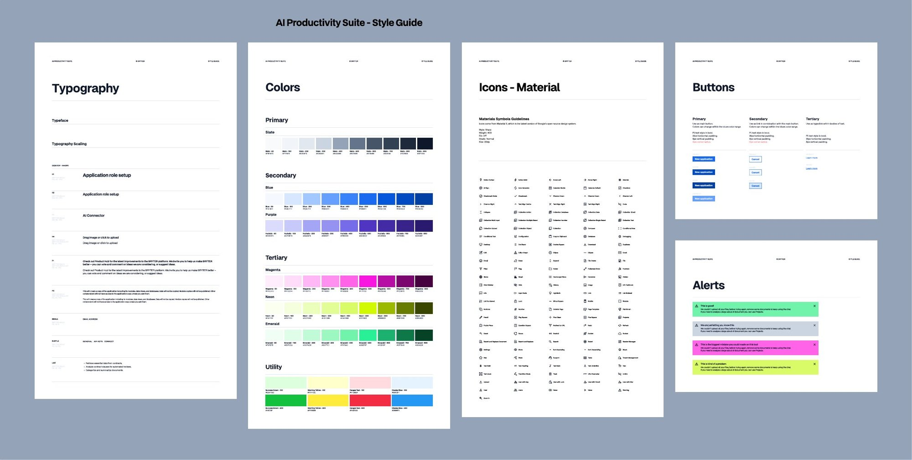

Bryter
Prototyping AI agents for compliance teams that turned 30 trials into 5 paying customers and a Product of the Year shortlist
From legal intake to AI agents for compliance teams · Legal tech & compliance AI
Bryter's low-code platform was powerful but too heavy for busy lawyers. Over 18 months we tried a ready-made legal intake product, dropped it when buyers showed no urgency, pivoted to AI for compliance teams, launched with paying customers, and then moved back to legal when demand data pointed there.
Work in progress. I’m still updating this case study, so some parts are shorter than they will be.
Recognition
Finalist, Product of the Year
Bryter was shortlisted for Product of the Year at the ALM Law.com European Legal Innovation & Technology Awards 2025, held in Milan.

01 · Research changed my mind
An intake product nobody was pulling for
We started with legal intake and matter management. I believed matter management and triage were the value. Our sandbox customers, Allianz, Bosch, Solaris and TD Synnex, ignored both after a few weeks; they only leaned in for the automation. We stripped the product back to intake alone.
Buyers had budget but no urgency. Meanwhile companies were moving money into AI, often without a use case, and the CEO’s strategy team picked Governance, Risk and Compliance, with company policies as the way in.
Nobody knew whether that market was real.
My job: find out quickly, without building much.02 · My part
Every call tracked, then mapped
Every prospect session went into one funnel, in the prospect’s own words. Insights became candidate features, each tagged with the prospects it would serve. That gave the strategy team 3 regulated areas to test: OSHA rules for manufacturing, energy and construction; HR; and anti-bribery compliance, which applies to every industry.
03 · My part
The buyer wasn't the user
Compliance bought the product. Everyone else had to use it.
Manufacturing workers
Often no computer at hand. Warnings are printed as signs.
Clinicians
Know their protocols. No time to wait for GRC.
Desk workers
Can look the policy up themselves.
Expert users
GRC and HR: keep policies current, train, report.

04 · Screens
Two looks for the first prototype
The CEO wanted something distinct from the platform, purple instead of blue, before any brand existed. I went colourful and playful first, against the grey platform; the team loved it. Leadership wanted it more serious, so version 2 is calmer. The scope stayed at 4 features: upload, chat with those documents, references, feedback. Plus one fake page, a mocked analytics view, to see what prospects reached for.


05 · Key decision
We sat in the calls ourselves
Once the prototype existed, the PM and I joined prospect sessions instead of reading the notes afterwards. Notes tell you what was said; being in the room tells you what mattered. It confirmed something I now always push for: when the people building hear prospects first-hand, ownership goes up and the build moves faster.
06 · Screens
Every answer shows where it came from
Answers come only from the policies the company uploaded, never the open web. Every answer points to the passage it came from, highlighted, and every answer can be marked wrong. In a regulated space, that is what made people trust it.


07 · Screens
The fake page that became the product
The mocked insights on the first dashboard, contradictions, legibility and best practice, got the strongest reactions in calls. So they became the real Policy Agent overview. Cheap test first, then build.

08 · Key decision
Rebuilt around who can see what
We kept the trial customers close, watched how they used the product, and reworked the information architecture around roles: admins, compliance teams, experts and employees. Soft launch came in April 2024, before we had a brand, with 5 paying customers: Bertelsmann, Zimmer Biomet, Essity, TD Synnex and Datasite.

09 · Screens
Designing AI Agents with 1 developer
Policy AI became AI Agents, each one specialised in a single regulation. Commercial wanted agents in their own space, and we had 1 frontend developer. I explored options inside the existing UI and added one menu layer. It looked like a lot on paper; users got it straight away.

10 · Screens
Back to legal: the Contract Agent
When demand pointed back to legal teams, the patterns carried over: projects for each review, chat grounded in the documents you attach, and extracted fields you can check against the source.


What I'd do differently
We had the technology before the market
Legal: loud
Constant media coverage. New AI tools every week.
Compliance: quiet
Our SEO showed no AI search traffic. Sales handovers showed flat interest.
Look for demand signals before the build, not after it. We also lost the argument about feature names: users wanted "Chat", commercial wanted something that sounded sophisticated. I collected customer quotes to make the case.